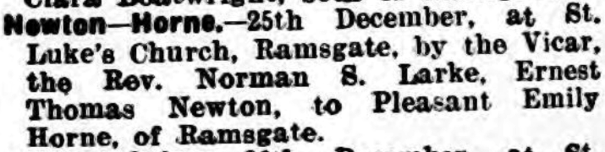

Ernest Thomas Newton 1898 - c1962
[ Home ] | [ Calendar ] | [ Surnames Index ] | [ Errors ] | [ Family History ]Ernest Newton, the husband of Pleasant Emily Horn (the second cousin twice-removed on the father's side of Nigel Horne), was born in Chartham, Kent, England on 29 Apr 18981,2, was baptised there at St Mary's Church, Church Lane on 12 Jun 1898 and married Pleasant (with whom he had 3 children: Walter Ernest, Hilary P and Graham, along with 1 surviving child) at St Luke's Church, Ramsgate, Kent, England on 25 Dec 19294. On 29 Sept 1939, he was living at 22 Hardres Road in Ramsgate1.
He died c. May 1962 in Bridge, Kent, England3.
Children
- Walter Ernest was born c. Feb 1931
- Graham was born on 28 Nov 1942
Citations
- 1939 Register - Findmypast (was the head of the household)
- England & Wales births 1837-2006 - Findmypast
- England & Wales deaths 1837-2007 - Findmypast
- England & Wales Marriages 1837-2005 - Findmypast
Media
Thanet Advertiser 28 Dec 1929

Ernest Thomas Newton
England & Wales deaths 1837-2007 - BMD/D/1962/2/AZ/000745/043
England & Wales marriages 1837-2005 - BMD/M/1929/4/AZ/000876/061
Kent Baptisms - GBPRS/CANT/B/96195132
England Births & Baptisms 1538-1975 - R_885426931
Family Tree

Map
Generated by ged2site. Last updated on Jul 3, 2024
Known Issues
Baptism information not used to determine a parent
No records of living with anyone